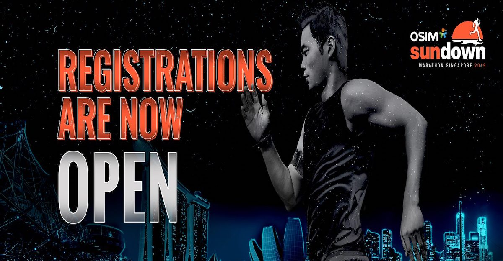
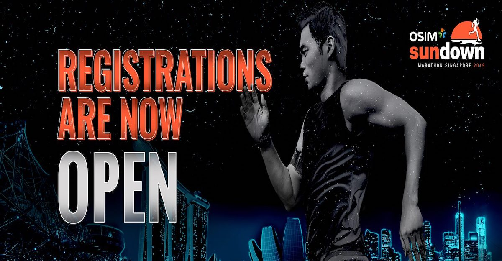

RULES & REGULATIONS
GENERAL
- OSIM Sundown Marathon 2019 (“OSDM”) 2019 is owned by F4U Pte Ltd (the “Owner” or “F4U”) and organised by Infinitus Productions Pte Ltd (the “Race Organiser”) in accordance with these Rules & Regulations (the “R & Rs), applicable to the participants, which can be found at www.sundownmarathon.com/sg (the “Official Website”).
- By continuing to access any part of the Official Website, registering for the OSDM, submitting information to F4U, the Race Organiser and/or the relevant business partners, whether for the purpose of registering for the OSDM or otherwise, as well as using any features of the Official Website, you signify that you have read, understood and agree to the collection, use and disclosure of your personal data. Further, you hereby expressly agree and consent to F4U, the Race Organiser and/or the relevant business partners collect, use and disclose your personal data for purposes reasonably required for the conduct and promotion of the OSDM.
- Completion of the online race registration form confirms the person’s (the “Participant”) agreement and acceptance to abide by these R & Rs.
- Registration for the OSDM is only confirmed upon payment of the relevant registration fee and issuance of a race confirmation slip.
- The Participant agrees to : (i) provide true, accurate, current and complete information about himself/herself in the registration form (the “Personal Data”) and (ii) maintain and promptly update the Personal Data to ensure it stays true, accurate, current and complete. F4U and/or the Race Organiser may contact the Participant from time to time by email and/or SMS. Any notice sent to the email address and/or SMS sent to the telephone number registered for the OSDM via the online race registration form shall be deemed as received by the Participant.
- If the Participant provides any information that is untrue, inaccurate, not current or incomplete or if the Race Organiser has grounds to suspect that such information is untrue, inaccurate, not current or incomplete, the Race Organiser may suspend or terminate the Participant’s registration.
- After registration, there shall be no refund of any registration fees to any Participant who does not in due course take part in the OSDM, for any reason whatsoever.
- Once registration is confirmed, a Participant is strictly NOT ALLOWED to:
(a) transfer her race entry to another party; or
(b) participate under other person’s name or number.
- F4U and Race Organiser reserves the right to modify or substitute any of these R & Rs from time to time as they deem fit. If there is ambiguity in any of these provisions, F4U shall be the sole authority to interpret them and in so doing, it may take into account the interests of all affected Participants. Any amendments to these R & Rs will be updated on the Official Website.
- F4U and the Race Organiser reserves the right to limit and refuse entries without assigning any reasons thereof.
- F4U and the Race Organiser reserve the right to delay, cancel or change any details of the OSDM or any component of it at any time without prior notice to the Participants. In such cases, every effort will be made to inform the Participants prior to the day / date of the event. If OSDM or any component of it is cancelled, there shall be no refund of registration fees paid. F4U and the Race Organiser shall not be liable for any consequential loss or inconvenience caused.
- The Race Organiser reserves the right to amend the OSDM 2019 race routes as they deem fit for the safety of the Participants and/or to prevent any potential hazards in the running of the OSDM, at any time without prior notice to the Participants. In such cases, every effort will be made to inform the Participants prior to the day / date of the event. F4U and the Race Organiser shall not be liable for any consequential loss or inconvenience caused.
- F4U and the Race Organiser reserves the right to use any photographs, motion pictures, images, recordings or any other record of the OSDM and its Participants, whether in its original or edited format, for any commercial advertising and other promotional purposes linked to the OSDM.
SAFETY
- Whilst reasonable precaution will be taken to ensure the Participants’ safety, the Participant takes part in OSDM 2019 at her own risk. To the greatest extent permitted by the law, F4U and the Race Organiser shall not be held liable for any loss, damage, personal injury or death howsoever arising in connection with the OSDM 2019. Each Participant is strongly encouraged to consult her medical practitioner prior to the registration of OSDM and before the actual race day.
- A Participant shall retire from the OSDM 2019 immediately if required to do so by any member official medical staff, Event officials, referee and/or security officer.
RACE CATEGORIES
- Participants can choose to participate either as an individual or as part of a team. The race categories for individual and team participation are as follows:
Individual
- 5km Fun Run Kids/Youth (Male/Female)
- 5km Fun Run Adult (Male/Female)
- 10km Challenge (Male/Female)
- 10km Challenge Team of 4 (Male Team /Female Team /Mixed Team)
- 21.1km Half Marathon (Male/Female)
- 42.195km Full Marathon (Male/Female)
AGE REQUIREMENTS
- 5km Kids/Youth (Male/Female)
- A Participant must be 6 to 17 years old as of race day to participate in the 5km Kids/Youth category.
- 5km Adult (Male/Female)
- A Participant must be 18 years old and above as of race day to participate in the 5km Adult category.
- 10km Challenge (Male/Female)
- A Participant must be 16 years old and above as of race day to participate in the 10km Challenge category.
- 10km Challenge Team of 4 (Male Team /Female Team /Mixed Team)
- A Participant must be 16 years and above on race day to participate in the 10km run.
- 21.1km Half Marathon (Male/Female)
- A Participant must be 18 years and above on race day to participate in the 21.1km Half Marathon.
- 42.195km Full Marathon (Male/Female)
- A Participant must be 18 years and above on race day to participate in the 42.195km Full Marathon.
- Any Participant below the age of 16 is required to seek parental/guardian consent and complete the relevant indemnity and declaration forms when registering online or in-person failing which the Race Organiser reserves the right to refuse entry to that Participant.
- For the avoidance of doubt, the Participant’s age will be deemed to be her age as of 01 June 2019.
ENTITLEMENTS
- T-shirt sizes are subject to availability.
- All participants will receive a finisher medal at the end of their run.
- Only participants in the 42.195km Full Marathon category will receive a finisher tee at the end of their run.
RACE
- Participants are to assemble in their respective starting point based on their race category.
- The form on the reverse side of the Participants’ race bib must be fully and accurately completed. Participants must attach the assigned bib on the front of their running attire. Participants not wearing a bib will be taken off the race route by security officers or route marshals.
- Pets, bicycles, in-line skates, prams, push carts, shoes with built-in or attached rollers and any other wheel-run objects are not allowed on the race route.
- The Organiser strongly encourages all participants to deposit their belongings at the ‘Baggage Deposit Booth’ before entering the start pen. For security reasons, only bags that are smaller than 20cm x 15cm are permitted on the race route.
- For safety reasons, F4U and the Race Organiser restrict the following persons from participating in the OSDM 2019:- (a) mothers running with their babies in baby carriers; or (b) expectant mothers unless the expectant mothers provide a medical certificate from a qualified gynaecologist in Singapore (other than the expectant mother or her family member) and certify she is fit to participate in the OSDM 2019. The certificate should be dated within seven days of the OSDM 2019.
- Any Participant who commences before the actual start time of the race category for which she registered in will be disqualified. The start time for the respective race categories can be found on the Official Website.
- A participant who does not start within 30 minutes from her respective flag off point will be disqualified and for safety reasons, shall not be allowed to start.
- F4U and the Race Organiser will not be responsible for any loss and/or damage to the belongings and items deposited at the event baggage storage facility. The Race Organiser also reserves the right to open and examine any item or baggage deposited for security purpose.
- The “Gun Time” will be considered to determine the winners except for the non-competitive categories. “Gun Time” shall be the time from the start signal until the Participant crosses the finishing line.
- F4U and the Race Organiser reserves the right to replace any winner if she is found to be disqualified.
RACE ENTRY PACK COLLECTION
- All Participants must collect their race entry pack (the “Race Entry Pack”) which includes the race bib, OSDM t-shirt and other novelties at the Race Entry Pack Collection location during the collection period (“Collection Period”). Details will be posted on the Official Website in due course.
- Participants may empower a duly authorised representative to collect the Race Entry Pack on their behalf in accordance with the procedure detailed on the Official Website if they are unable to collect it in person.
- It is the responsibility of the Participant to collect her Race Entry Pack during the Collection Period. Late collection will not be entertained and the Race Organiser shall not be liable for any other loss or inconvenience caused due to Participants’ inability to collect their Race Entry Pack. The Race Organiser is also not obliged to extend the Collection Period or to ensure that a Participant receives her Race Entry Pack. Race Entry Packs not collected during the Collection Period will be deemed to be unwanted, and the Race Organiser shall be at liberty to dispose or re-distribute them accordingly. Participants without their race bibs (which can be found in the Race Entry Packs) are strictly not allowed to start the race.